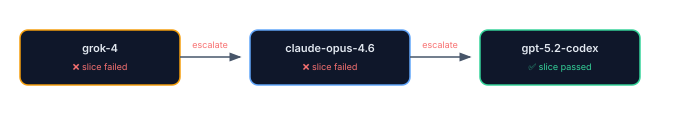
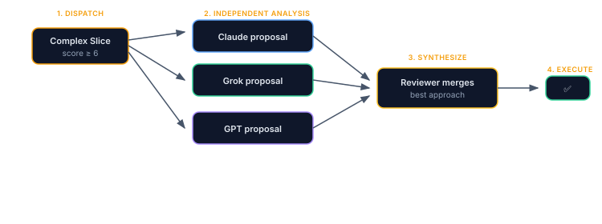
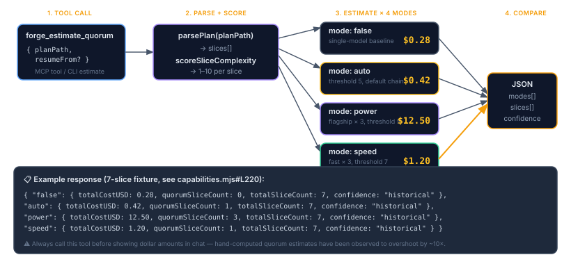
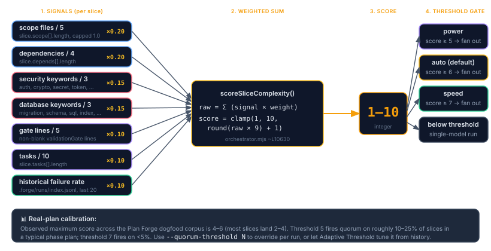
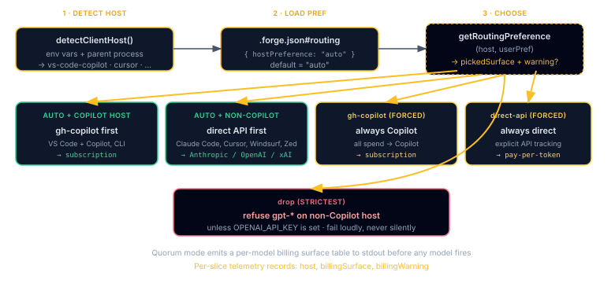

Advanced Execution
Model routing, quorum mode, cost optimization, CI integration, and resume strategies.
- Model Routing, assign different AI models to different jobs (cheap one for grunt work, expensive one for review).
- Escalation Chains, if Model A fails a slice, automatically retry with Model B, then C.
- Quorum Mode, have multiple models solve the same slice in parallel and pick the best answer. Higher quality, higher cost.
- Cost Optimization & CI Integration, caps, budgets, and running plans inside GitHub Actions.
- Resume & Retry, pick up where a failed run left off without redoing finished slices.
Model Routing
Assign different models per role in .forge.json:
Same principle as a human team: let the junior do the legwork, the senior does the final check. Costs less, catches more.
{
"modelRouting": {
"default": "grok-4",
"execute": "claude-sonnet-4.6",
"review": "claude-opus-4.6"
}
}Use a fast/cheap model for execution and a more capable model for review. The orchestrator routes each slice to the appropriate model based on its role.
DIRECT_API_ONLY vs COPILOT_SERVABLE v2.81+
Models are split into two routing classes that determine how the orchestrator reaches them:
| Class | Models | Routing |
|---|---|---|
DIRECT_API_ONLY | grok-*, dall-e-* | HTTP API only. No CLI proxy exists. Requires XAI_API_KEY / OPENAI_API_KEY. |
COPILOT_SERVABLE | gpt-*, chatgpt-* (incl. gpt-5.3-codex) | Prefers gh copilot CLI proxy when available (uses your Copilot subscription). Falls back to direct OpenAI API if OPENAI_API_KEY is set. |
| Everything else | Claude, Gemini, etc. | CLI-first via the matching agent CLI (claude, gemini, etc.) |
This split (Phase-34, fixes #103) means gpt-* models no longer drop from auto-quorum when OPENAI_API_KEY is unset but gh-copilot is installed. The old pattern conflated “requires direct API” with “routed via HTTP” and unfairly penalized Copilot users.
Escalation Chains
When a model fails a slice, the orchestrator automatically escalates to the next model in the chain:
{
"escalationChain": ["grok-4", "claude-opus-4.6", "gpt-5.2-codex"]
}Model A fails → Model B retries the same slice → Model C if B fails too. Emits slice-escalated WebSocket event at each step. No manual intervention required.
loadEscalationChain() reorders models by success rate × cost efficiency. The best-performing, cheapest model moves to position 1 automatically. No configuration needed, just run plans and the forge learns.

Quorum Mode
Multi-model consensus for complex slices. Multiple models analyze the same problem independently, then a reviewer synthesizes the best approach.
copilot CLI is logged in, --quorum=power|speed|auto fans out across multiple models without any API keys, each leg is a separate copilot subprocess invoked with a different --model flag. The orchestrator's quorum dispatcher (quorumDispatch) calls spawnWorker once per model inside Promise.all; filterQuorumModels drops any model whose CLI/credentials aren't reachable so the quorum gracefully degrades instead of failing.Add API keys to mix providers. Set
XAI_API_KEY (or drop it in .forge/secrets.json) and a Grok leg joins the same parallel fan-out alongside your Copilot-served legs, see the worked example below.Not to be confused with Forge-Master's
dispatchQuorum, which is HTTP-only and does require per-model API keys. That surface only powers the chat reasoning lane, not run-plan.

# Force quorum on all slices
pforge run-plan docs/plans/Phase-7.md --quorum
# Auto-quorum: only trigger for complex slices (threshold ≥ 6)
pforge run-plan docs/plans/Phase-7.md --quorum=auto
# Custom threshold (1-10, higher = fewer slices use quorum)
pforge run-plan docs/plans/Phase-7.md --quorum=auto --quorum-threshold 8
# Flagship preset (Opus + GPT-5.3-Codex + Grok 4.20, threshold 5)
pforge run-plan docs/plans/Phase-7.md --quorum=power
# Fast preset (Sonnet + GPT-5.4-mini + Grok 4.1 Fast, threshold 7)
pforge run-plan docs/plans/Phase-7.md --quorum=speed| Setting | Effect | Cost Impact |
|---|---|---|
--quorum | Every slice gets multi-model consensus | 3× normal cost |
--quorum=auto | Only slices above complexity threshold | 1.2–1.5× normal cost |
--quorum=power | Flagship models (Opus + GPT-5.3-Codex + Grok 4.20), threshold 5, 5min timeout | 3× at threshold 5 |
--quorum=speed | Fast models (Sonnet + GPT-5.4-mini + Grok 4.1 Fast), threshold 7, 2min timeout | 1.5× at threshold 7 |
| No flag | Single model per slice | 1× baseline cost |
Worked Example — 2× Copilot CLI + 1× Grok API v2.83+
The most common production setup: ride your Copilot subscription for the bulk of the quorum, add one direct-API leg (Grok or OpenAI) for diversity. Both kinds of leg run in the same Promise.all, no special config to "merge" them.
Step 1: declare the model mix in .forge.json:
.forge.json{
"quorum": {
"models": [
"gpt-5.3-codex", // → copilot CLI subprocess
"claude-sonnet-4.6", // → copilot CLI subprocess
"grok-4.20-0309-reasoning" // → direct-API worker (XAI_API_KEY)
],
"reviewerModel": "claude-opus-4.7" // → copilot CLI subprocess
}
}Step 2: provision the Grok key (one of):
# Option A: env var (per-shell)
$env:XAI_API_KEY = "xai-..."
# Option B: project-local secrets file (gitignored)
# .forge/secrets.json
{ "XAI_API_KEY": "xai-..." }Step 3: run with quorum:
# See the projected cost across all four modes first (always tool-backed)
pforge run-plan --estimate docs/plans/Phase-7.md
# Then run, quorum-eligible slices fan out to all three models in parallel
pforge run-plan docs/plans/Phase-7.md --quorum=autoWhat happens at slice dispatch:
quorumDispatchsees three models in the config.spawnWorkeris called three times concurrently. The first two route to the localcopilotCLI (no key needed, rides your Copilot subscription); the third routes to the xAI HTTP worker usingXAI_API_KEY.- All three return their dry-run analyses.
quorumReviewsynthesises them via the reviewer model into a singleenhancedPrompt. - The actual slice execution runs once with that synthesised prompt, not three concurrent edits.
If the Grok key is missing, filterQuorumModels drops Grok from the list at run-plan startup and the quorum proceeds with the two Copilot-served legs, no failure, just a smaller jury.
Quorum Mode vs Quorum Advisory — What's the Difference? v2.78+
Two surfaces use the word "quorum." They're related but operate at different scopes:
| Quorum Mode (this section) | Quorum Advisory (Forge-Master) | |
|---|---|---|
| Where | forge_run_plan / --quorum=… | forge_master_ask / Studio tab |
| Decision unit | Per slice | Per prompt |
| Auto-winner? | Yes, reviewer synthesizes one approach | No, human picks the reply |
| Activation | --quorum=auto/power/speed CLI flag | forgeMaster.quorumAdvisory: "auto" \| "always" in .forge.json |
| Cost preview | forge_estimate_quorum tool | quorum-estimate SSE event before dispatch (cancellable) |
| Best for | High-complexity slice execution that benefits from multi-model consensus | High-stakes judgment calls (architectural choices, trade-offs) where dissent is the signal |
You can use both. Quorum Mode runs slice execution; Quorum Advisory helps you decide what to put in the slice in the first place.
Estimating Quorum Cost — forge_estimate_quorum v2.83+
forge_estimate_quorum first. Hand-computed quorum estimates have been observed to overshoot reality by an order of magnitude (Phase-COST-TOKEN-COVERAGE field reports). The agent guidance shipped in .github/copilot-instructions.md requires this for any quorum picker UI.
forge_estimate_quorum projects the cost of a plan under all four quorum modes in one round-trip, no need to call --estimate four separate times. It returns per-mode totals plus a per-slice breakdown showing which slices cleared the threshold.

Calling the tool
// Direct MCP call
forge_estimate_quorum({
planPath: "docs/plans/Phase-7.md",
resumeFrom: 1 // optional, only estimate slices ≥ N
})
// CLI equivalent (runs all four modes under the hood)
pforge run-plan docs/plans/Phase-7.md --estimate --quorum-compareResponse shape
{
"false": { "totalCostUSD": 0.28, "baseCostUSD": 0.28, "overheadUSD": 0,
"quorumSliceCount": 0, "totalSliceCount": 7, "confidence": "historical" },
"auto": { "totalCostUSD": 0.42, "baseCostUSD": 0.28, "overheadUSD": 0.14,
"quorumSliceCount": 1, "totalSliceCount": 7, "confidence": "historical" },
"power": { "totalCostUSD": 12.50, "baseCostUSD": 0.42, "overheadUSD": 12.08,
"quorumSliceCount": 3, "totalSliceCount": 7, "confidence": "historical" },
"speed": { "totalCostUSD": 1.20, "baseCostUSD": 0.31, "overheadUSD": 0.89,
"quorumSliceCount": 1, "totalSliceCount": 7, "confidence": "historical" },
"slices": [
{ "sliceNumber": 1, "complexityScore": 3, "projectedCostUSD": 0.04, "quorumEligible": false },
{ "sliceNumber": 2, "complexityScore": 6, "projectedCostUSD": 4.18, "quorumEligible": true },
{ "sliceNumber": 3, "complexityScore": 7, "projectedCostUSD": 4.22, "quorumEligible": true },
...
]
}| Field | Meaning |
|---|---|
baseCostUSD | What the plan costs without quorum overhead, single-model run for every slice |
overheadUSD | Δ added by the extra quorum legs + reviewer synthesis. baseCostUSD + overheadUSD = totalCostUSD. |
quorumSliceCount | How many slices cleared the mode's threshold and will fan out to multiple models |
confidence | "historical" when calibrated against ≥ 3 prior runs, "heuristic" for cold-start projects |
slices[].complexityScore | The 1–10 score from scoreSliceComplexity() |
slices[].quorumEligible | Whether this slice cleared the threshold for the requested mode |
Worked cost example: 7-slice fixture plan
The numbers above come from the heuristic fixture used in capabilities.mjs, illustrative, not measured. For a typical mid-size plan (10–15 slices, 1–3 quorum-eligible), real-world numbers from the Plan Forge dogfood corpus look like:
| Mode | Total cost | Multiplier vs baseline | Slices fanned out | Use when |
|---|---|---|---|---|
false (off) | ~$0.30 – $2.00 | 1.0× | 0 / 12 | Mechanical work, conversions, doc edits |
--quorum=auto | ~$0.40 – $3.50 | 1.2 – 1.8× | 1–2 / 12 | Default for normal feature work |
--quorum=speed | ~$1.00 – $4.00 | 1.5 – 2.5× | 1 / 12 (threshold 7) | Tight budget, want consensus only on the genuinely hard slices |
--quorum=power | ~$10 – $25 | 10 – 30× | 2–4 / 12 (threshold 5) | Architectural slices, security-critical paths, irreversible migrations |
--quorum (force-all) | ~$30 – $80 | 30 – 100× | 12 / 12 | Almost never. Use auto + selective --quorum-threshold instead. |
Numbers are order-of-magnitude, actual cost depends on slice scope size, host (subscription-covered vs pay-per-token), and the cost-calibration ratio in .forge/cost-history.json. Always estimate before running.
forge_estimate_slice (companion tool) returns cost for one slice with rationale strings like "threshold 5 met: complexity 6" or "mode false: quorum disabled". Useful when you want to ask “is this specific slice worth quorum?” without re-estimating the whole plan.
Complexity Scoring Rubric — How a Slice Earns Its Score v2.83+
What makes a slice "complex enough to need quorum"? The orchestrator's scoreSliceComplexity() function (see orchestrator.mjs) reads seven weighted signals from the parsed slice and produces an integer 1–10. Modes then compare that score against their threshold to decide whether to fan out.

The seven signals
| Signal | Weight | Source | What it captures |
|---|---|---|---|
| Scope breadth | 0.20 | slice.scope[].length / 5 | How many files this slice touches. Wide scope ⇒ more places to make a mistake. |
| Dependencies | 0.20 | slice.depends[].length / 4 | How many earlier slices this one builds on. Deep dependencies ⇒ harder reasoning chain. |
| Security keywords | 0.15 | Hits in title + tasks + gate | Matches against auth, crypto, secret, token, password, jwt, oauth, …. Security mistakes are expensive to roll back. |
| Database keywords | 0.15 | Hits in title + tasks + gate | Matches against migration, schema, sql, index, constraint, foreign key, …. Schema changes are often irreversible. |
| Gate complexity | 0.10 | Non-blank lines in validationGate | A long validation gate is a proxy for "this slice has a lot of correctness conditions to satisfy." |
| Task count | 0.10 | slice.tasks[].length / 10 | Many small tasks ⇒ more chances for a single model to lose track. |
| Historical failure rate | 0.10 | .forge/runs/index.jsonl (last 20) | If past slices with similar title words have failed often, this one gets nudged up. Self-tuning over time. |
The raw weighted sum (0–1) is mapped to the final integer via clamp(1, 10, round(raw × 9) + 1).
Threshold mapping
| Mode | Threshold | What clears it (typical) |
|---|---|---|
--quorum=power | 5 | Slices touching 3+ files or with deep deps or mentioning auth/schema |
--quorum=auto | 6 (CLI default) | The above plus a substantial gate or 6+ tasks |
--quorum=speed | 7 | Only the genuinely hard slices, wide scope and security/db keywords and failure history |
| Custom | --quorum-threshold N | Override per run; 1 = quorum everything, 10 = quorum almost nothing |
power mode (catches the architectural slices), threshold 6 is conservative for auto (catches roughly 10–25% of slices in a typical phase), and threshold 7 fires on <5% of slices. The Adaptive Quorum Threshold system in .forge/quorum-history.json auto-tunes these from your project's run history.
Worked example
Consider a slice titled "Add JWT refresh-token rotation with Redis backing" with 4 scope files, depends on slices 2 and 5, 7 tasks, a 12-line validation gate, and 1 prior failure in 8 historical matches:
scope = min(4/5, 1.0) × 0.20 = 0.16
depends = min(2/4, 1.0) × 0.20 = 0.10
security = min(2/3, 1.0) × 0.15 = 0.10 // "jwt", "token"
database = min(0/3, 1.0) × 0.15 = 0.00
gate = min(12/5, 1.0) × 0.10 = 0.10
tasks = min(7/10, 1.0) × 0.10 = 0.07
history = (1/8) × 0.10 = 0.0125
──────
raw = 0.5425
score = clamp(1, 10, round(0.5425 × 9) + 1) = 6
→ clears threshold for: power (≥5), auto (≥6)
→ does NOT clear: speed (≥7)Multi-Agent Quorum Turns — PFORGE_QUORUM_TURN v2.78+
When quorum runs in multi-agent mode (Claude → Codex → Cursor handoffs), the orchestrator sets the PFORGE_QUORUM_TURN environment variable for the duration of each quorum-leg invocation. This is a coordination signal, not user-facing config, but it shows up in logs and matters when debugging hook behavior.
What the variable controls
| Hook / system | Behavior when PFORGE_QUORUM_TURN is set |
|---|---|
PreAgentHandoff hook | Skipped. Returns { triggered: false, skippedReason: "PFORGE_QUORUM_TURN active" } and logs [PreAgentHandoff] skipping context injection, PFORGE_QUORUM_TURN active. See orchestrator.mjs ~L7585. |
| OpenClaw snapshot post | Skipped. No drift / MTTR / incident snapshot is sent between quorum legs. |
| Cost telemetry | Per-leg cost is tagged quorumTurn: true in slice-N.json so the Cost Report can roll up the legs into a single quorum line item. |
| Tracing | Each leg gets its own trace span but with a shared quorumGroupId so dashboards can collapse them. |
Why skip context injection?
Quorum exists to get independent analyses from each model. If PreAgentHandoff injected the same drift / MTTR / open-incident context into every leg, the models would converge, defeating the whole point. The reviewer (the synthesizing model) does get the full handoff context when it merges the proposals, because that's where the project-wide state actually matters.
PreAgentHandoff to silently skip, which can mask drift alerts. If you see "PFORGE_QUORUM_TURN active" in logs outside a quorum run, something has leaked the variable; clear it with Remove-Item Env:PFORGE_QUORUM_TURN (PowerShell) or unset PFORGE_QUORUM_TURN (bash).
📄 Cross-references: Chapter 13 — Multi-Agent for the handoff model · Chapter 20 — Remote Bridge for the OpenClaw snapshot path · Forge-Master Quorum Advisory for the per-prompt counterpart.
Quorum Quality Examples — What 3 Models Catch That 1 Doesn't
The argument for quorum mode is mostly abstract, "synthesis effect," "independent analyses," "reviewer picks the cleaner approach." A single side-by-side run of the same task makes the argument concrete. The numbers below come from a controlled A/B run on a real C# invoicing slice: same plan, same gates, same acceptance criteria; one execution with the default single-model worker, one with three-model quorum. Both passed all gates and the independent reviewer. The difference is in how they passed.
| Metric | Single (control) | Quorum (3-model) |
|---|---|---|
| Tests written | 15 | 18 (+20%) |
| Helper extraction | Inline code, repeated 3× | Extracted helpers, single source |
| Test dates | Hardcoded literals | Relative offsets |
| .NET pattern | Generic ValidationException | ArgumentException.ThrowIfNullOrWhiteSpace |
| Edge cases | Standard happy path | Voided invoice regen, sequence races |
| Total cost | $0.62 | $0.84 (+35%) |
$0.22 of additional spend, both pass review, and the quorum run is measurably more maintainable. Four named patterns drive the difference.
Pattern 1 — DRY helper extraction
The single-model run inlined volume-discount math in three call sites with slight variations. The quorum run extracted reusable helpers because the synthesizer saw multiple proposals and picked the one that didn't repeat itself.
IsWeekend(), CalculateVolumeDiscount(), and ApplyBankersRounding() as private static helpers, called from each invoicing entry point. The single-model run inlined the equivalent ternary expressions at every call site. Same behavior; different debuggability when the discount tier changes a year from now.
// Single model, inlined at three call sites
var discount = quantity >= 100 ? 0.15m : quantity >= 50 ? 0.10m : quantity >= 10 ? 0.05m : 0m;
// Quorum, extracted helper
private static decimal CalculateVolumeDiscount(int quantity) => quantity switch
{
>= 100 => 0.15m,
>= 50 => 0.10m,
>= 10 => 0.05m,
_ => 0m,
};Pattern 2 — Robust test dates
Single-model tests pinned dates to literal calendar days. Those tests will fail when those dates pass and the business logic correctly refuses future invoices. Quorum tests used relative offsets that stay green forever.
new DateTime(2026, 3, 15) in test fixtures. The quorum run wrote DateTime.Now.AddDays(-7). Identical intent; only one survives March 16th.
// Single model, breaks on April 16th
var invoice = new Invoice { Date = new DateTime(2026, 3, 15) };
// Quorum, stays green forever
var invoice = new Invoice { Date = DateTime.Now.AddDays(-7) };Pattern 3 — Modern .NET patterns
Validation guard clauses are a tell. The control run used the generic exception path; the quorum run reached for the modern static-helper API that ships better error messages and is the current recommended pattern.
throw new ValidationException("Customer name is required"). The quorum run used ArgumentException.ThrowIfNullOrWhiteSpace(customerName). The quorum reviewer chose the .NET 7+ helper because one of the three workers proposed it; the synthesizer recognized it as the modern equivalent.
// Single model, generic, manual message
if (string.IsNullOrWhiteSpace(customerName))
throw new ValidationException("Customer name is required");
// Quorum, modern .NET 7+ helper, auto-generated message including parameter name
ArgumentException.ThrowIfNullOrWhiteSpace(customerName);Pattern 4 — Edge-case coverage the control missed entirely
The +3 tests in the quorum run weren't padding. They were edge cases the single model never wrote because no one model considered both the happy path and the failure mode at the same time. With three independent analyses, edge cases that one model thinks of get surfaced into the synthesis.
VoidedInvoice_Regenerate_AssignsNewSequenceNumber) and a test for "concurrent invoice number assignment under two simultaneous requests" (ConcurrentInvoiceCreation_DoesNotReuseSequenceNumbers). Neither appeared in the control run. Both are exactly the kind of test that catches a production bug six weeks after launch.
The synthesis mechanism
The pattern across all four examples is the same: one model proposes one thing, another model proposes a cleaner version, the reviewer picks the cleaner one. Inline code vs extracted helper, extraction wins. Hardcoded date vs relative offset, relative offset wins. Generic exception vs modern helper, modern helper wins. Standard tests vs edge-case tests, edge-case tests win. The quorum doesn't make any individual model smarter; it makes the worst-case output of each model less likely to be what ships.
When this pays off
| Slice type | Quorum worth it? | Why |
|---|---|---|
| Auth / billing / payments | Yes | Edge cases here are production bugs that cost money; +35% cost is cheap insurance |
| Database migrations | Yes | Wrong migration is irreversible; multi-model agreement is a meaningful signal |
| Architectural slices (new layer, new pattern) | Yes | The synthesis effect produces noticeably cleaner abstractions |
| Bug fix with tight reproducer | Maybe | If the fix is one line and the test is obvious, single model is fine |
| CRUD endpoint, well-trodden pattern | Probably not | All three models will produce nearly identical code; +35% cost buys nothing new |
| Pure docs slice | No | Synthesis effect doesn't apply to prose; pick the cheapest model that writes well |
--quorum=auto applies this judgment per slice using the complexity scoring rubric. Manual --quorum=power and --quorum=speed let you force the call when you already know which slices are which. The discovery harness uses single-model dispatch by default because audit findings are mechanical; the auto-smelt loop is the place to catch defects, not the discovery pass.
📄 Source: Quorum Mode — What 3 Models Catch That 1 Doesn't on the Plan Forge blog (the controlled A/B run that produced this comparison).
Host-Aware Routing v2.82+
Plan Forge runs in different IDEs and CLI hosts (VS Code + Copilot, Claude Code, Cursor, Windsurf, Zed, the bare CLI). Each host has its own billing surface. The host-aware routing preference (added v2.82, fixes #104) ensures users on non-Copilot hosts don't silently double-pay against subscriptions they're already paying for.

gh-copilot first (subscription). Auto+non-Copilot -> direct API first (honor user's subscription). gh-copilot mode -> always Copilot. direct-api mode -> always direct. drop mode -> refuse gpt-* on non-Copilot host without OPENAI_API_KEY." class="diagram-img diagram-img-md my-4" />The four modes
| Mode | Behavior | When to use |
|---|---|---|
auto (default) | Claude Code / Cursor / Windsurf / Zed prefer direct API first; VS Code + Copilot / CLI keep gh-copilot first | Recommended. Honors whatever subscription the user is paying for. |
gh-copilot | Always prefer gh copilot regardless of host | You want all spend to land on your Copilot subscription |
direct-api | Always prefer direct HTTP APIs regardless of host | You're scripting with explicit per-call cost tracking |
drop | Refuses gpt-* on non-Copilot hosts unless OPENAI_API_KEY is set. Strongest "honor the vendor" stance. | You want to fail loudly rather than spend silently |
Configuration
{
"routing": {
"hostPreference": "auto" // "auto" \| "gh-copilot" \| "direct-api" \| "drop"
}
}Pre-run summary table
Before any model fires in quorum mode, the orchestrator emits a per-model billing surface table to stdout:
Quorum Pre-Run Summary (host: claude-code, preference: auto)
✓ claude-opus-4.7 → anthropic-direct ($0.0061/req)
✓ gpt-5.3-codex → openai-direct ($0.0048/req)
⚠ grok-4.20 → xai-direct ($0.0033/req) needs XAI_API_KEY
✓ claude-sonnet-4.6 → anthropic-direct ($0.0019/req)
Per-slice telemetry now records host, billingSurface, and billingWarning in slice-N.json so cost aggregation can distinguish subscription-covered vs pay-per-token spend in the Cost Report.
Cost Optimization
The orchestrator tracks model performance in .forge/model-performance.json, success rate, average cost, and duration per model. It auto-selects the cheapest model with >80% historical pass rate.
- Cost Calibration, Estimates auto-correct using a historical estimate-vs-actual ratio (clamped 0.5×–3×). After 3+ runs,
--estimateaccuracy improves automatically. - Adaptive Quorum Threshold, Reads
.forge/quorum-history.jsonto learn which slices actually need quorum. If <20% needed it, threshold rises (fewer quorum runs = lower cost). If >60% needed it, threshold drops. - Slice Auto-Split Advisory,
--estimateflags slices with 2+ prior failures or >6 tasks as candidates for splitting. Smaller slices cost less and succeed more often.
- Preview costs:
pforge run-plan --estimate docs/plans/Phase-7.md - Review spend:
pforge costor Dashboard Cost tab - Agent-per-slice routing: Override model per slice with
--modelflag - Reduce context: Use targeted
Context:lists per slice (see Chapter 4)
API Key Configuration
API keys for external providers (xAI Grok, OpenAI) are resolved in order: environment variable → .forge/secrets.json → null.
For local development, store keys in the gitignored .forge/secrets.json:
{
"XAI_API_KEY": "xai-...",
"OPENAI_API_KEY": "sk-..."
}The .forge/ directory is in .gitignore by default, secrets are never committed.
CI Integration
Add Plan Forge validation to your GitHub Actions PR workflow:
- uses: srnichols/plan-forge-validate@v1
with:
analyze: true # Run consistency scoring
sweep: true # Check for TODO/FIXME markers
threshold: 60 # Minimum analyze score to passPRs that fail the threshold are blocked from merging. The action validates file counts, checks for unresolved placeholders, and runs pforge analyze.
Cloud Agent Execution
GitHub's Copilot cloud agent works on issues autonomously. Plan Forge integrates via .github/copilot-setup-steps.yml, which provisions the agent with Node.js, guardrails, MCP tools, and smith verification before it starts coding.
Parallel Execution
The orchestrator builds a DAG from [P] tags and [depends: Slice N] declarations. Independent slices run concurrently when workers are available. Merge checkpoints validate that all parallel branches resolved cleanly.
[scope:] paths, the orchestrator flags the conflict before execution starts.
Resume and Retry
# Resume from slice 3 after fixing a failure
pforge run-plan docs/plans/Phase-7.md --resume-from 3
# Dry run, parse and validate without executing
pforge run-plan docs/plans/Phase-7.md --dry-runWhen a gate fails, fix the issue manually, then resume. Completed slices are skipped, only remaining slices execute.
OpenBrain Memory
The OpenBrain integration bridges the 4-session pipeline with long-term, cross-session context. Prior decisions, patterns, and postmortems are automatically searched and injected at the start of each session. After every run, lessons are captured for future phases.
As of v3.6, OpenBrain is the documented L3 memory layer, still optional, but loud and easy to enable. Check status with pforge brain status; see install options with pforge brain hint. Plan Forge works without it; the inner loop (Reflexion, Auto-skills, Federation) only improves over time with it. See Project History → v3.6.
Install via extension: pforge ext add plan-forge-memory
LiveGuard Lifecycle Hooks (v2.29)
Three hooks fire automatically during agent sessions to enforce operational safety:
| Hook | Trigger | Behavior | Blocking |
|---|---|---|---|
| PreDeploy | Before deploy-related file writes or commands | Runs forge_secret_scan + forge_env_diff, blocks on findings | Yes |
| PostSlice | After every slice commit | Runs forge_drift_report, warns on drift regression | No (advisory) |
| PreAgentHandoff | At session start when resuming work | Injects LiveGuard context into agent prompt | No |
Configure in .forge.json:
{
"hooks": {
"preDeploy": { "blockOnSecrets": true, "warnOnEnvGaps": true, "scanSince": "HEAD~1" },
"postSlice": { "silentDeltaThreshold": 5, "warnDeltaThreshold": 10, "scoreFloor": 70 },
"preAgentHandoff": { "injectContext": true, "cacheMaxAgeMinutes": 30, "minAlertSeverity": "medium" }
}
}See Chapter 16 — What Is LiveGuard? for the full operational intelligence overview.
📄 Full reference: capabilities, CLI Reference — run-plan